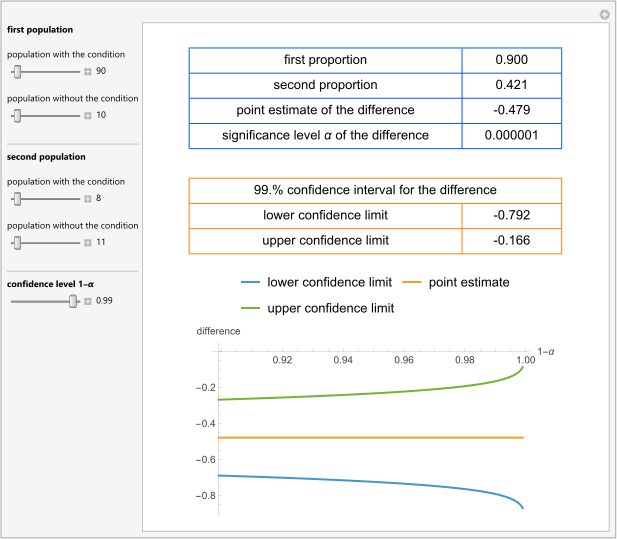
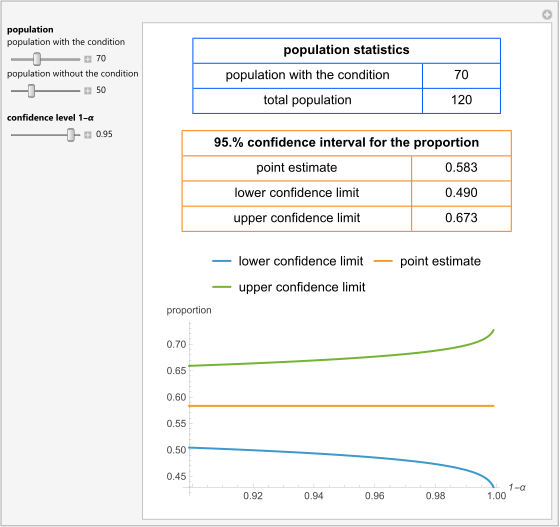

Publications
Statistical Tools
1. Chatzimichail T, Hatjimihail AT. Inferences about the Difference between Two Proportions. Wolfram Demonstrations Project. Wolfram Research; 2018.
Abstract
This Demonstration explores statistical inferences regarding the difference between two proportions of populations obeying a condition (or trait). It calculates the statistical significance and the confidence intervals for the difference and plots the confidence intervals versus p-value. This is done for differing populations obeying a condition or without the condition and for differing p-values for the estimation of the confidence intervals.
Snapshot

Source Notebook (Revised on 2025-10-20)
2. Chatzimichail T, Hatjimihail AT. Exact Confidence Intervals for a Single Proportion. Wolfram Demonstrations Project. Wolfram Research; 2018.
Abstract
This Demonstration shows calculations of point estimations and confidence intervals for various single proportions of populations obeying a condition (or trait), as well as their plots versus p-value. This is done for differing populations obeying and violating a condition (or trait) and differing p-values for the estimation of the lower and upper bounds of the confidence intervals.
Comment
The exact method using the F distribution is applied to calculate the confidence interval of each single proportion.
Snapshot

Source Notebook (Revised on 2025-10-20)
Terms of Use
The material made freely available by Hellenic Complex Systems Laboratory is subject to its Terms of Use.